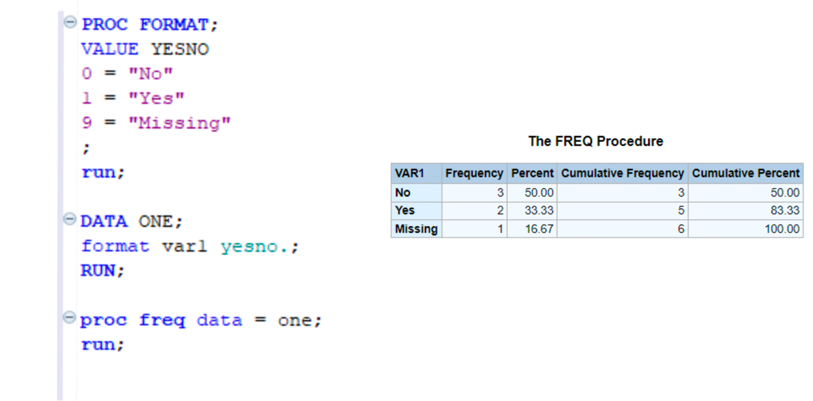
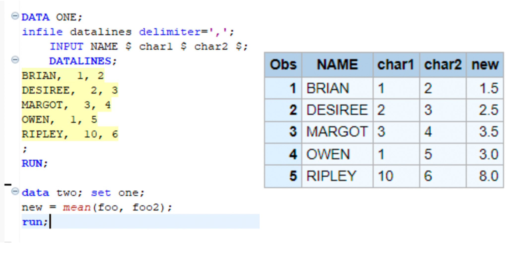
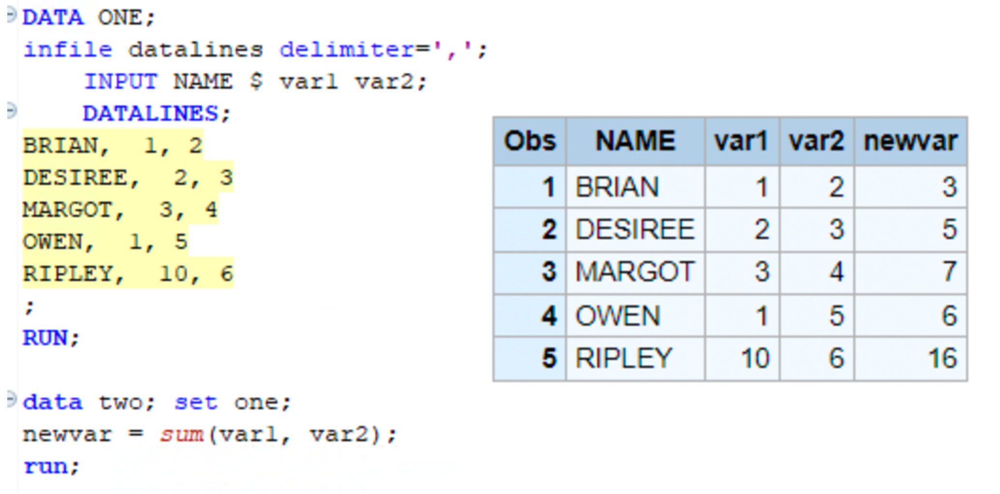
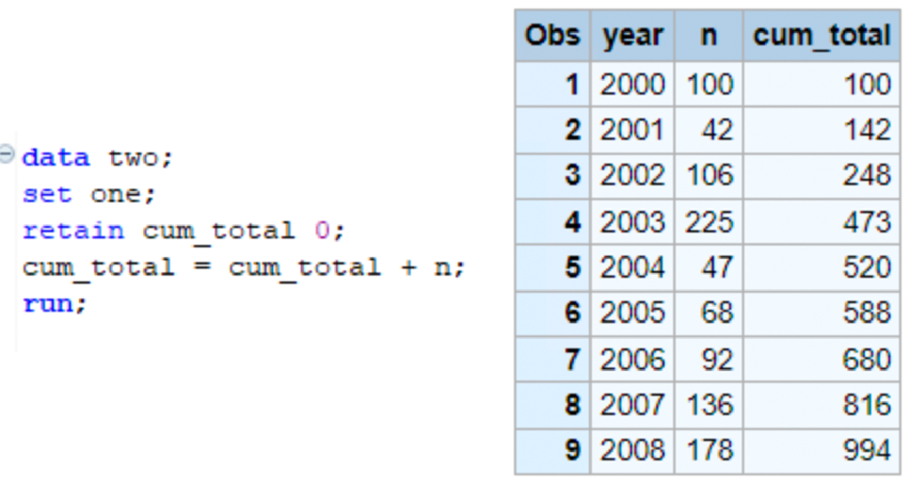

dateVariables <- c("date1", "date2", "date3")
df[,dateVariables] <- lapply(df[,dateVariables], function(sasDate) {
as.Date(sasDate, origin = "1960-01-01")
}THE SAS DATA STEP
The SAS data step
Introduction
I spent most of my career as a lonely R programmer in a SAS group that was perpetually failing its R migration. Changing the direction in an organization is always difficult, and in this case the major push back mostly came from non-technical study management staff who still needed SAS for their day to day processes.
These staff managed all of the raw study data coming into our research program. They imported messy questionnaire data from vendors and prepared it for the scientific staff to analyze. The SAS DATA step was their primary domain and they were understandably sensitive to any changes to their workflow that could risk the science.
I often thought that if I could simply translate their macros and educate them about vectors, there would be no more excuses and we could cut the cord to SAS, but that strategy was never successful. I came to see that, for large swaths of data professionals, the DATA step is a safe place to do vital work. I want to discuss how three aspects of SAS DATA step that builds a particular mental model of data processing that makes it difficult to transition to R.
The tabular SAS data set is the only data structure available in SAS.
These data sets store data in only two types
These data sets are processed differently than any other data processing language
The SAS Data Set
The SAS data set is a proprietary file type and is essentially the only data structure available in SAS. SAS data sets conform to what most people think of as data: a 2-dimensional table with rows representing a particular observation and columns as variables in that observation. The SAS DATA step locks the user into this single tabular data set and all procedures use this single data set as an input.
Unlike SAS, tabular data sets are just one of many structures that are necessary for a typical R workflow. The fundamental unit of analysis in R is the vector, a homogeneous set of values of any length. Matrices and arrays expand the vector into a multidimensional structure, and heterogeneous collections of vectors can be collected into data frames, and one can put anything and everything in a list. A cursory search will reveal additional data structures for more specialized applications.
The trouble that SAS users often face is that all of these objects are often necessary for a typical R workflow and this can become overwhelming. I often recommend that SAS users get their introduction in R through the tidyverse. dplyr pipes broadly mirror a SAS data step because they focus the processing on single data frames. However, it is important to continue the learning process to include all the major data structures included in R because they will find that the tidyverse is not a panacea to all data challenges.
Data types
The SAS DATA Step has exactly two data types: character and numeric. On its face, this seems like it would be a limitation, but it is has its advantages. This simple system includes reasonable defaults for coercion and type conversion, so users don’t often worry about the underlying types in their variables. This is in contrast to R that includes 6 atomic variable types that can be expanded and adapted across packages and use cases. The below table roughly maps the basic vector types in R to their corresponding SAS versions.
| SAS | R | Example |
|---|---|---|
| Numeric | Integer | 0L, 1L, 2L, 3L |
| Double (numeric) | 1.5, 1e10, -5.9 |
|
| Complex | 1.5i, 3+2i |
|
| Logical | TRUE/ FALSE |
|
| Character | Character | "I am a character string" |
| Raw | 01, ff |
Formats
SAS applies formatting attributes to these two data types to simulate many distinct types of variables. SAS dates, for instance, are simply a numeric value representing the number of days relative to January 1st, 1960. Users treat date values like any other number, but the overlying format displays as a date. Dates work similarly in R, only the value is relative to January 1st, 1970. When working with a SAS data set that includes dates, I often start every program with a quick conversion:
Users can also distinguish continuous vs categorical variables by including a format for a numeric variable. Using PROC FORMAT will provide display values and order to a variable. SAS users take advantage of this to create ordered output or define reference groups in the CLASS [statement for many models](https://documentation.sas.com/doc/en/pgmsascdc/9.4_3.4/statug/statug_glm_syntax04.htm)
SAS users will find the R factor type to be the closest analog to a SAS format. The factor type is a categorical variable that can be ordered or unordered. Just like SAS, factor variables can be used for post hoc contrasts, statistical interactions, and ordered results. Unlike SAS, factor labels/levels are hard coded into the data set; there is no need for a format library so data sets are more portable.

df |>
dplyr::mutate(var1 = factor(var1,
labels = c("No", "Yes", "Missing"))) |>
dplyr::count(var1) var1 n
1 No 3
2 Yes 2
3 Missing 1Coercion
SAS is often smart enough to identify a number, even when it is coded as a character string. Coercion is a process where a variable is converted from one type to another and it is often a feature included by developers to make the user experience a bit more seamless. Due to the simple data types used in SAS, this is often implemented very intuitively and SAS users don’t often think about it until they see a gentle warning in their logs. Take the following example. This sample data set uses character variables, char1 and char2 to store numeric values, and I want to calculate a mean of them:
SAS is helpful and knows that char1 and char2 are numbers formatted as strings and automatically converts then for the mean()

In R, the mean() function does not coerce the character variables to numeric, so the user must do this manually. In this case, R has set new to missing.
one <- data.frame(NAME = c("BRIAN", "DESIREE", "MARGOT", "OWEN", "RIPLEY"),
char1 = c("1", "2", "3", "1", "10"),
char2 = c("2", "3", "4", "5", "6"))
one |>
dplyr::rowwise() |>
dplyr::mutate(new = mean(char1, char2))# A tibble: 5 × 4
# Rowwise:
NAME char1 char2 new
<chr> <chr> <chr> <dbl>
1 BRIAN 1 2 NA
2 DESIREE 2 3 NA
3 MARGOT 3 4 NA
4 OWEN 1 5 NA
5 RIPLEY 10 6 NAAs a general rule, R functions are designed to only work with a specific type of data: mean() will only work on numeric data and substr() will only work on characters. There are exceptions that will throw off new R programmers. R supports generic functions that seem to work differently depending on the data. The summary() function will provide numeric distributions for a vector of numbers, or structured statistic output if run on a glm object.
Package developers often incorporate a mixture of generic and type-specific functions because accessing this kind of flexibility is a feature of R that is shared with many programming languages. It takes a bit of getting used to for SAS programmers, but ultimately This kind of flexibility is a feature of R, shared with many programming languages, but this added complexity is often adds to the learning curve for SAS users.
DATA step mechanics
The SAS DATA step operates on two sequential steps. In the compilation phase, SAS scans the code for syntax errors and translates it into machine language. It creates a program data vector (PDV) in memory where is builds the output data set one observation at a time. The PDV will include the final variables with attributes requested by the DATA step.
The program is then executed as a loop, with each row of the input data set processed individually and output to the PDV. If no errors are found in the observation, the result is output to a final data set. This process repeats until SAS finishes with the last observation or an error is identified.
Variable attributes are defined at two stages of the DATA step. They can be defined explicitly through INPUT, LENGTH, LABEL or FORMAT. Alternatively, SAS can infer these attributes by, typically by the initial or final attributes fed to the PDV.
This observation-based processing trains SAS programmers to think of the observation as the basic unit of every SAS data set. As discussed above, the vector is the basic data structure in R and data frames are simply a collection of equal-length vectors and each step of the processing is a manipulation of these vectors.
Native R users may find the SAS DATA step to be a very inefficient process, but SAS programmers find it intuitive and it is difficult to break. Let’s describe 2 examples that SAS users will find commonplace but work very differently in R.
Example 1: summarizing variables
A typical workflow includes deriving new variables based on the values of others. In this case, the user wants to calculate the sum of two variables. Since they are accustomed to SAS’s observation-based processing, they could choose the built-in sum() function to calculate the total, and this works as expected. However, in R, the sum() function is vectorized, which produces a very different result.
The SAS code works as expected, the newvar variable is simply a row-wise sum of var1 and var2.

In R, the sum() function is vectorized, so the result is the sum of all the values in the vector. This is not what the user intended.
one |>
dplyr::mutate(newvar = sum(var1, var2)) Name var1 var2 newvar
1 Brian 1 2 37
2 Desiree 2 3 37
3 Margot 3 4 37
4 Owen 1 5 37
5 Ripley 10 6 37Correct R Version
To get the desired result, the user can force R to treat the data frame similarly to SAS by using the dplyr::rowwise(). Remember to dplyr::ungroup() at the end of each code chunk. Note: dplyr::rowwise() also demonstrates that observation-based processing is painfully slow.
one |>
dplyr::rowwise() |>
dplyr::mutate(newvar = sum(var1, var2)) |>
dplyr::ungroup()# A tibble: 5 × 4
Name var1 var2 newvar
<chr> <dbl> <dbl> <dbl>
1 Brian 1 2 3
2 Desiree 2 3 5
3 Margot 3 4 7
4 Owen 1 5 6
5 Ripley 10 6 16:::
Example 2: RETAIN statement
The RETAIN statement is a common feature in the SAS DATA step. It is used to carry forward the value of a variable from one observation to the next. This is useful for creating lagged variables or for accumulating totals. The RETAIN statement works because of the observation-based processing in R. For each iteration of the PDV, the prior value is retained rather than initialized to missing. SAS programmers use this for all sorts of things, from creating sequential identifiers, to imputing missing values.
Let’s look at an example in SAS of how using the RETAIN statement can be used to calculate a cumulative total over years:
The SAS code works as expected, the newvar variable is simply a row-wise sum of var1 and var2.

These tools exist in R. The cumsum() function is a vectorized version of the RETAIN statement. The cumsum() function calculates the cumulative sum of a vector. These are knows as window functions and are fully supported in the dplyr package
one |>
dplyr::mutate(cum_sum = cumsum(N)) year N cum_sum
1 2000 100 100
2 2001 42 142
3 2002 106 248
4 2003 225 473
5 2004 47 520
6 2005 68 588
7 2006 92 680
8 2007 136 816
9 2008 178 994Where do you start in a SAS migration?
I have helped a lot of organizations migrate from SAS to R. I’ve translated code, I’ve developed detailed SAS to R cookbooks for major universities, and I’ve trained small and large groups to prepare them for the transition. The dplyr and the tidyverse are the most common tools used in the R ecosystem to replace the DATA step. The dplyr package has simplified the R language for working with tables, and has been extended to work with databases so SAS users can use one set of code and avoid PROC SQL.
But I have found that the tidyverse is not able to do everything I want in R, nor was it designed to. Users still benefit from a comprehensive R training that introduces them to the the various building blocks of the base R language, so that they can use the tidyverse